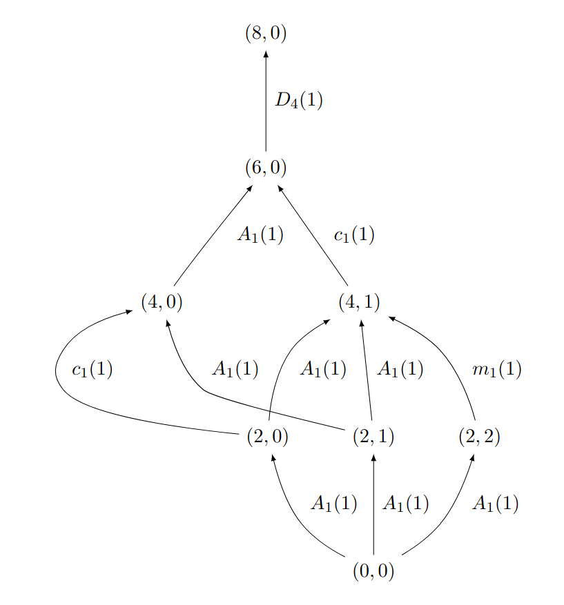

QuiverCombinatoricsTools¶
QuiverCombinatoricsTools is a SageMath package that adds combinatorial functions to QuiverTools to calculate symplectic leaves of quiver varieties, available here https://github.com/emanuel-roth/QuiverCombinatoricsTools. It adds on to the QuiverTools package written by Pieter Belmans, Hans Franzen and Gianni Petrella, as seen here https://sage.quiver.tools/ and here https://github.com/QuiverTools/QuiverTools, so consult their documentation when needed.
To install it, make sure you have both QuiverTools and QuiverCombinatoricsTools
sage --pip install git+https://github.com/QuiverTools/QuiverTools.git
sage --pip install git+https://github.com/emanuel-roth/QuiverCombinatoricsTools.git
and then you can simply run
from quiver import *
from quivercombinatorics import *
to get started.
Authors
Tudor-Ioan Caba (University of Edinburgh)
Mia Lam (University of Edinburgh)
Emanuel Roth (University of Edinburgh)
We were supervised by Gwyn Bellamy (University of Glasgow), as part of an AGQ computing project.
Generating quivers¶
Here are some functions that help generate quivers to test examples.
- quivercombinatorics.quiver_from_cartan_matrix(C)[source]¶
Returns the quiver \(Q\) given by a Cartan matrix \(C\)
INPUT:
C– a square matrix with entries in \(\mathbb{Z}\)
OUTPUT: The quiver \(Q\) given by a Cartan matrix \(C\)
EXAMPLE:
sage: from quivercombinatorics import * sage: C = [[2, -1, 0], [-1, 2, -2], [0, -2, 2]] sage: quiver_from_cartan_matrix(C) a quiver with 3 vertices and 3 arrows
- quivercombinatorics.random_quiver(vertices, max_arrows_per_edge)[source]¶
Returns a randomly generated quiver
INPUT:
vertices– number of vertices you want in the quiver, in \(\mathbb{N}_0\)max_arrows_per_edge– maximum of number of arrows you want in the quiver, in \(\mathbb{N}_0\)
OUTPUT: A randomly generated quiver with the prescribed vertices and maximum number of edges
EXAMPLES:
sage: from quivercombinatorics import * sage: random_quiver(3, 2) a quiver with 3 vertices and 6 arrows sage: from quivercombinatorics import * sage: random_quiver(46, 25) a quiver with 46 vertices and 26388 arrows
We notate quivers by \(Q\), with vertices in \(Q_0\) and edges in \(Q_1\).
Constructing \(\Sigma_{\lambda}\)¶
We follow William Crawley-Boevey in this paper. Given a quiver \(Q\) with \(n\) vertices, and \({\lambda}\in\mathbb{Z}^n\), \(\Sigma_{\lambda}\) is the set of \(\alpha\in\mathbb{N}^n\) such that \(\alpha\) is a positive root of \(Q\), \(\alpha\cdot\lambda = 0\), and
for any decomposition \(\alpha=\beta^{(1)}+\dots+\beta^{(r)}\) with \(r\geq 2\) and \(\beta^{(t)}\) a positive root of \(Q\) with \(\lambda\cdot\beta^{(t)}=0\) for all t.
- Quiver.p_function(x)[source]¶
Outputs the function \(p(x) = 1 - \frac{1}{2}(x, x)\), where \((x, x)\) is the symmetrized Euler form. Note that \(p(x)\geq 0\) if \(x\) is a root, and \(p(x) = 0\) if and only if \(x\) is a real root
INPUT:
x– an element of \(\mathbb{Z}Q_0\)
OUTPUT: \(1 - \frac{1}{2}(x, x)\)
EXAMPLE:
The \(p\) function evaluated at \((2, 3)\) of the doubled A2 quiver:
sage: from quivercombinatorics import * sage: Q = Quiver([[0, 1], [1, 0]]) sage: Q.p_function((2, 3)) 0.0
We write \(R_\lambda^+\) to denote the set of positive roots \(\alpha\) with \(\alpha\cdot\lambda=0\) and \(\mathbb{N}R_\lambda^+\) for the set of sums of elements of \(R_\lambda^+\). Using Theorem 5.6 of Crawley-Boevey’s paper.
Theorem (Crawley-Boevey, 2001)
For \(\alpha\in\mathbb{N}^n\), then \(\alpha\in\Sigma_\lambda\) if and only if \(0\neq\alpha\in\mathbb{N}R_\lambda^+\) and \((\beta,\alpha-\beta)\leq -2\) whenever \(\beta\in\mathbb{N}^n\) and \(0<\alpha<\beta\).
- Quiver.R_lambda_plus(l, v)[source]¶
Returns a list of elements of \(R_\lambda^+\), the set of positive roots \(\alpha\) with \(\alpha\cdot\lambda=0\), up to the upper bound \(v\)
INPUT:
l– an element of \(\mathbb{Z}Q_0\)v– an element of \(\mathbb{N}Q_0\)
OUTPUT: A list of elements of \(R_\lambda^+\), where
lis \(\lambda\), the set of positive roots \(\alpha\) with \(\alpha\cdot\lambda=0\), up to the upper bound \(v\)EXAMPLE:
sage: from quivercombinatorics import * sage: Q = Quiver([[0, 1], [1, 0]]) sage: Q.R_lambda_plus((1, -1), (5, 5)) [(1, 1), (2, 2), (3, 3), (4, 4)]
We also need the helper function N_set.
- quivercombinatorics.N_set(S, v)[source]¶
For a list of vectors \(S\) in \(\mathbb{Z}Q_0\), returns all possible sums of vectors in \(S\) as a list, up to the upper bound \(v\). Though not directly about quivers, this is a helper function to define \(\Sigma_\lambda\)
INPUT:
S– a list of vectors \(S\) in \(\mathbb{Z}Q_0\)v– vector in \(\mathbb{Z}Q_0\)
OUTPUT: A list of all possible sums of vectors in \(S\) as a list, up to the upper bound \(v\)
EXAMPLE:
sage: from quivercombinatorics import * sage: N_set([[0, 1]],[0, 3]) [(0, 1), (0, 2), (0, 3)]
With these functions, we can define \(\Sigma_{\lambda}\).
- Quiver.sigma_lambda(l, v)[source]¶
Returns a list of elements of \(\Sigma_\lambda\), up to the upper bound \(v\)
INPUT:
l– an element of \(\mathbb{Z}Q_0\)v– an element of \(\mathbb{N}Q_0\)
OUTPUT: A list of elements of \(\Sigma_\lambda\), where
lis \(\lambda\), up to the upper bound \(v\)EXAMPLE:
sage: from quivercombinatorics import * sage: Q = Quiver([[0, 1], [1, 0]]) sage: Q.sigma_lambda((1, -1), (5, 5)) [(1, 1)]
CB-decompositions¶
A representation type of \(x\) of a quiver \(Q\) is a sequence \(\tau=(\beta^{(1)},n_1;\dots;\beta^{(k)},n_k)\) with \(\beta^{(i)}\in\Sigma_\lambda\) and \(n_i\in\mathbb{N}\) such that
We allow \(\beta^{(i)}\) to occur multiple times if it is an imaginary root, i.e. \(p(\beta^{(i)})>0\). The CB-decomposition of \(x\) is defined to be the unique representation type of \(x\) for which
is maximal. In order to construct CB-decompositions (called canonical decompositions in this paper, but are not the same as canonical_decomposition from QuiverTools). We first need to find all representation types of \(x\), up to a bound \(v\), for which we need the following helper functions.
- quivercombinatorics.vector_decomposition(x, S)[source]¶
For a list of vectors \(S\) in \(\mathbb{Z}Q_0\), returns all possible sums of vectors in \(S\) as a list that sum up to \(x\). This is a helper function in order to define CB-decompositions
INPUT:
x– a vector in \(\mathbb{Z}Q_0\)S– a list of vectors \(S\) in \(\mathbb{Z}Q_0\)
OUTPUT: All possible sums of vectors in \(S\) as a list that sum up to \(x\)
EXAMPLE:
sage: from quivercombinatorics import * sage: vector_decomposition((4, 5), [(0, 1),(1, 0),(1, 1)]) [[[(0, 1), 1], [(1, 1), 4]], [[(0, 1), 2], [(1, 0), 1], [(1, 1), 3]], [[(0, 1), 3], [(1, 0), 2], [(1, 1), 2]], [[(0, 1), 4], [(1, 0), 3], [(1, 1), 1]], [[(0, 1), 5], [(1, 0), 4]]]
- quivercombinatorics.small_decomposition(v, n)[source]¶
For a vector \(v\) in \(\mathbb{Z}Q_0\), it returns all possible partitions of the representation type \([v,n]\)
INPUT:
v– a vector in \(\mathbb{Z}Q_0\)n– a natural number in \(\mathbb{N}\)
OUTPUT: All possible partitions of the representation type \([v,n]\)
EXAMPLE:
sage: from quivercombinatorics import * sage: small_decomposition((1, 1), 3) [[[(1, 1), 1], [(1, 1), 1], [(1, 1), 1]], [[(1, 1), 2], [(1, 1), 1]], [[(1, 1), 3]]]
With these functions, we can determine all representation types.
- Quiver.all_representation_types(l, x)[source]¶
Returns a list of representation types of a quiver, with respect to \(x\)
INPUT:
l– an element of \(\mathbb{Z}Q_0\)x– an element of \(\mathbb{N}Q_0\)
OUTPUT: A list of representation types of a quiver, with respect to \(x\), and where
lis \(\lambda\). Each representation type is stored as a list whose elements are 2-tuples, the first element is in \(\mathbb{N}Q_0\), and the second is in \(\mathbb{N}\)EXAMPLES:
Q = Quiver([[0, 1], [1, 0]]) Q.all_representation_types((1, -1), (5, 5)) [[[(1, 1), 1], [(1, 1), 1], [(1, 1), 1], [(1, 1), 1], [(1, 1), 1]], [[(1, 1), 1], [(1, 1), 1], [(1, 1), 1], [(1, 1), 2]], [[(1, 1), 1], [(1, 1), 1], [(1, 1), 3]], [[(1, 1), 1], [(1, 1), 2], [(1, 1), 2]], [[(1, 1), 1], [(1, 1), 4]], [[(1, 1), 2], [(1, 1), 3]], [[(1, 1), 5]]] sage: C = [[2,-1,0], [-1,2,-2], [0,-2,2]] sage: Q = quiver_from_cartan_matrix(C) sage: Q.all_representation_types((0,0,0), (2,4,3)) [[[(0, 0, 1), 1], [(0, 1, 0), 2], [(0, 1, 1), 1], [(0, 1, 1), 1], [(1, 0, 0), 2]], [[(0, 0, 1), 1], [(0, 1, 0), 2], [(0, 1, 1), 2], [(1, 0, 0), 2]], [[(0, 0, 1), 2], [(0, 1, 0), 3], [(0, 1, 1), 1], [(1, 0, 0), 2]], [[(0, 0, 1), 3], [(0, 1, 0), 4], [(1, 0, 0), 2]], [[(0, 1, 0), 1], [(0, 1, 1), 1], [(0, 1, 1), 1], [(0, 1, 1), 1], [(1, 0, 0), 2]], [[(0, 1, 0), 1], [(0, 1, 1), 1], [(0, 1, 1), 2], [(1, 0, 0), 2]], [[(0, 1, 0), 1], [(0, 1, 1), 3], [(1, 0, 0), 2]], [[(2, 4, 3), 1]]]
Representation types of \(x\) correspond to a symplectic leaf of the quiver variety \(M_0(Q,x)\), and the symplectic leaf dimension is \(2p\) applied to the representation type, where \(p\) is the p_function.
- Quiver.symplectic_leaf_dimension(tau)[source]¶
Returns the dimension of the symplectic leaf corresponding to the representation type \(\tau\)
INPUT:
tau– a representation type, i.e., a list whose elements are 2-tuples, the first element is in \(\mathbb{N}Q_0\), and the second is in \(\mathbb{N}\)
OUTPUT: The corresponding symplectic leaf dimension, i.e., \(2p\) applied to every element of \(\tau\)
EXAMPLE:
sage: from quivercombinatorics import * sage: Q = Quiver([[0, 1],[1, 0]]) sage: Q.symplectic_leaf_dimension([[(1, 1), 2], [(1, 1), 3]]) 4
- Quiver.CB_decomposition(l, x)[source]¶
Returns the CB decomposition, which is the representation type maximizing \(p\)
INPUT:
l– an element of \(\mathbb{Z}Q_0\)x– an element of \(\mathbb{N}Q_0\)
OUTPUT: The CB decomposition with respect to \(x\), where
lis \(\lambda\)EXAMPLE:
sage: from quivercombinatorics import * sage: Q = Quiver([[0, 1],[1, 0]]) sage: Q.CB_decomposition((1, -1), (5, 5)) [[(1, 1), 1], [(1, 1), 1], [(1, 1), 1], [(1, 1), 1], [(1, 1), 1]]
Knowing the CB-decomposition, it is then easy to calculate the dimension of the quiver variety \(M_0(Q,x)\), as it gives the largest (open) symplectic leaf inside \(M_0(Q,x)\).
- Quiver.quiver_variety_dimension(l, x)[source]¶
Returns the dimension of the quiver variety
INPUT:
l– an element of \(\mathbb{Z}Q_0\)x– an element of \(\mathbb{N}Q_0\)
OUTPUT: The dimension of the corresponding quiver variety
EXAMPLE:
sage: from quivercombinatorics import * sage: Q = Quiver([[0, 1],[1, 0]]) sage: Q.quiver_variety_dimension((1, -1), (5, 5)) 10
It’s often important to know the codimension 2 leaves of the quiver variety \(M_0(Q,x)\), so we code this here.
- Quiver.codimension_two_leaves(l, x)[source]¶
Returns the codimension 2 leaves of the quiver variety
INPUT:
l– an element of \(\mathbb{Z}Q_0\)x– an element of \(\mathbb{N}Q_0\)
OUTPUT: The representation types of the codimension 2 leaves of the quiver variety
EXAMPLE:
sage: from quivercombinatorics import * sage: Q = Quiver([[0, 1],[1, 0]]) sage: Q.codimension_two_leaves((0, 0), (5, 5)) [[[(0, 1), 1], [(1, 0), 1], [(1, 1), 1], [(1, 1), 1], [(1, 1), 1], [(1, 1), 1]], [[(1, 1), 1], [(1, 1), 1], [(1, 1), 1], [(1, 1), 2]]]
\(\mathrm{ext}\)-quivers¶
Let \(\tau=(\beta^{(1)},n_1;\dots;\beta^{(k)},n_k)\) be a representation type of \(Q\). The \(\mathrm{ext}\)-quiver \(\tilde{Q}\) associated to the symplectic leaf is the quiver with \(k\) vertices where the number of edges between vertex \(i\) and vertex \(j\) is \(-(\beta^{(i)},\beta^{(j)})\) and the number of loops at vertex \(i\) is \(p(\beta^{(i)})\). The corresponding dimension vector of \(\tilde{Q}\) is \(\mathbf{n}=(n_1,\dots,n_k)\), and we take \(\tilde{\lambda}=0\).
- Quiver.ext_quiver(tau)[source]¶
Given a representation type, returns the ext-quiver
INPUT:
tau– a representation type, i.e., a list whose elements are 2-tuples, the first element is in \(\mathbb{N}Q_0\), and the second is in \(\mathbb{N}\)
OUTPUT: The \(\mathrm{ext}\)-quiver
EXAMPLE:
sage: from quivercombinatorics import * sage: Q = Quiver([[0, 1], [1, 0]]) sage: tau = [[(1, 1), 2], [(1, 1), 1], [(1, 1), 1], [(1, 1), 1]] sage: Q.ext_quiver(tau) a quiver with 4 vertices and 4 arrows
- quivercombinatorics.ext_dimension_vector(tau)[source]¶
For a representation type \(\tau\), returns the associated dimension vector
INPUT:
tau– a representation type, i.e., a list whose elements are 2-tuples, the first element is in \(\mathbb{N}Q_0\), and the second is in \(\mathbb{N}\)
OUTPUT: a vector in \(\mathbb{N}Q_0\)
EXAMPLE:
sage: from quivercombinatorics import * sage: tau = [[(1, 1), 2], [(1, 1), 1], [(1, 1), 1], [(1, 1), 1]] sage: ext_dimension_vector(tau) (2, 1, 1, 1)
Classification of minimal degenerations of symplectic leaves¶
For a quiver \(Q\), a positive root \(\alpha\) is minimal imaginary if it is imaginary and given any positive root \(\beta\), \(\alpha>\beta\) implies \(\beta\) is real.
- Quiver.is_minimal_imaginary_root(x)[source]¶
Tests whether a vector is a vector is a minimal imaginary root
INPUT:
x– a vector in \(\mathbb{Z}Q_0\)
OUTPUT:
Trueifxis a minimal imaginary root, andFalseotherwiseEXAMPLE:
sage: from quivercombinatorics import * sage: Q = KroneckerQuiver(2) sage: Q.is_minimal_imaginary_root((1,1)) True
- Quiver.all_minimal_imaginary_positive_roots(v)[source]¶
Returns all minimal imaginary positive roots up to a bound \(v\)
INPUT:
v– a vector in \(\mathbb{N}Q_0\)
OUTPUT: A list of all minimal imaginary positive roots up to a bound \(v\)
EXAMPLE:
sage: from quivercombinatorics import * sage: Q = KroneckerQuiver(2) sage: Q.all_minimal_imaginary_positive_roots((3,3)) [(1,1)]
Given a quiver \(Q\), a subquiver \(T = (T_0, T_1)\) is specified by a subset \(T_0\subset Q_0\) of the vertices. Then, for \(i, j \in T_0 \subset Q_0\) the number of edges between vertex \(i\) and \(j\) in \(T\) equals the number of edges between vertex \(i\) and \(j\) in \(Q\). In particular, if \(i\in T_0\) then the number of loops at \(i\) in \(T\) is the same as the number of loops at \(i\) in \(Q\). The support of a dimension vector \(v\) is the subset \(T_0 \subset Q_0\) of all vertices \(i\) such that \(v_i\neq 0\). We think of the support of \(v\) as a subquiver of \(Q\).
We say that the subquiver \(T\) is of affine ADE type if it is one of the graphs appearing in the classification of simply-laced affine Dynkin diagrams \(\tilde{A}_l\), \(\tilde{D}_l\) or \(\tilde{E}_6\), \(\tilde{E}_7\), \(\tilde{E}_8\). Then there is a unique imaginary root \(\delta\), with \(p(\delta)=1\), whose support is \(T\). The key result is the classification of minimal imaginary roots is the following (Bellamy-Schedler 2026).
Theorem (Bellamy-Schedler, 2026)
If \(M\) is a closed leaf in \(M_0(Q,x)\) and \(M\subset\bar{L}\) is a minimal degeneration, then \(\bar{L}\cong M\times S\), where \(S\) is isomorphic to one of the following isolated singularities:
A Kleinian singularity \((\mathbb{C}^2/\Gamma, 0)\).
The type A minimal nilpotent orbit closure \((\mathcal{O}_{\min},0)\) in \(\mathfrak{sl}_r(\mathbb{C})\).
\((\mathbb{C}^{2g}/\mathbb{Z}_2,0)\).
\(\operatorname{Spec}(\mathbb{C}[x\mid\deg x\geq 2])\).
We define \(\tilde{\tau}(\beta,n):=(\beta,n;e_1,\alpha_1-n\beta_1;\dots;e_r,\alpha_r-n\beta_r)\). In each of the above cases, the leaf \(L\) from this theorem corresponds to representation types:
\(\tilde{\tau}(\delta,n)\) for \(\delta\) a minimal imaginary root on an affine ADE subquiver.
\(\tilde{\tau}((1,1),n)\) for a two-vertex subquiver with \(t\geq 3\) edges between the vertices and no loops at the vertices.
\(\tau=(e_i,a;e_i,a;e_1,\alpha_1;\dots;e_{i-1},\alpha_{i-1};e_{i+1},\alpha_{i+1};\dots)\) where \(i\) is a vertex with \(g\geq 1\) loops and \(2a=\alpha_i\).
\(\tau=(e_i,a;e_i,b;e_1,\alpha_1;\dots;e_{i-1},\alpha_{i-1};e_{i+1},\alpha_{i+1};\dots)\) where \(i\) is a vertex with \(g\geq 1\) loops and \(0<a\neq b<\alpha_i\) with \(a+b=\alpha_i\).
We assign the following labels to each subminimal representation type (i.e., representation types corresponding to a minimal degeneration):
\(A_l,D_l\) or \(E_6,E_7,E_8\) for affine Dynkin diagram of type \(\tilde{A}_l,\tilde{D}_l\) or \(\tilde{E}_6,\tilde{E}_7,\tilde{E}_8\).
\(a_{r-1}\).
\(c_g\).
\(m_g\).
- Quiver.all_subminimal_representation_types(v)[source]¶
Returns all subminimal representation types up to a bound \(v\), and classifies them by affine Dynkin type, or \(a_{r-1}\), \(c_{g}\), \(m_{g}\)
INPUT:
v– a vector in \(\mathbb{N}Q_0\)
OUTPUT: A list of 2-tuples, the first element is a subminimal representation type up to a bound \(v\), the second element is its corresponding affine Dynkin type, or \(a_{r-1}\), \(c_{g}\), \(m_{g}\)
EXAMPLES:
sage: from quivercombinatorics import * sage: Q = CyclicQuiver(3) sage: Q.all_subminimal_representation_types((3, 3, 3)) [([[(0, 0, 1), 2], [(0, 1, 0), 2], [(1, 0, 0), 2], [(1, 1, 1), 1]], 'A_{2}'), ([[(0, 0, 1), 1], [(0, 1, 0), 1], [(1, 0, 0), 1], [(1, 1, 1), 2]], 'A_{2}'), ([[(1, 1, 1), 3]], 'A_{2}')] sage: from quivercombinatorics import * sage: Q = LoopQuiver(3) sage: Q.all_minimal_non_trivial_representation_types((5)) [([[(1), 1], [(1), 4]], 'm_{3}'), ([[(1), 2], [(1), 3]], 'm_{3}')] sage: from quivercombinatorics import * sage: A = [[0, 1, 0, 3], [1, 0, 0, 0], [0, 0, 2, 0], [0, 0, 0, 0]] sage: Q = Quiver(A) sage: Q.all_minimal_non_trivial_representation_types((1, 1, 4, 1)) [([[(0, 0, 0, 1), 1], [(0, 0, 1, 0), 4], [(1, 1, 0, 0), 1]], 'A_1'), ([[(0, 0, 1, 0), 4], [(0, 1, 0, 0), 1], [(1, 0, 0, 1), 1]], 'a_{2}'), ([[(0, 0, 0, 1), 1], [(0, 0, 1, 0), 1], [(0, 0, 1, 0), 3], [(0, 1, 0, 0), 1], [(1, 0, 0, 0), 1]], 'm_{2}'), ([[(0, 0, 0, 1), 1], [(0, 0, 1, 0), 2], [(0, 0, 1, 0), 2], [(0, 1, 0, 0), 1], [(1, 0, 0, 0), 1]], 'c_{2}')]
Plotting symplectic leaves in Hasse diagrams¶
We visualize the poset of symplectic leaves (equivalently of representation types) as a Hasse diagram: The vertices in this diagram are the representation types and the minimal degenerations, represented by an edge connecting two representation types, correspond to the situation where \(L_1\leq L_2\) (equivalently, \(\tau_1\leq\tau_2\)) but there does not exist \(L_3\) such that \(L_1 < L_3 < L_2\). We wish to compute the Hasse diagram, for which there are two methods.
Method 1
Traverse the Hasse diagram from the bottom, starting with the lowest leaves. When we reach a leaf \(L_i\), we compute the \(\mathrm{ext}\)-quiver associated to \(L_i\). On this \(\mathrm{ext}\)-quiver, we compute subminimal representation types of \(\mathbf{n}\). For each such representation type \(\tilde{\tau}=(\gamma^{(1)},m_1;\dots;\gamma^{(r)},m_r)\), define:
By (Bellamy-Schedler 2026), it is known that \(D(\tilde{\tau})\) is a representation type for \(v\).
In this way, we have a rule that assigns to each subminimal representation type of \(\tilde{Q}\) a representation type \(D(\tilde{\tau}(\alpha))\) of \(v\). It is known that \(\tau < D(\tilde{\tau}(\alpha))\) is a minimal degeneration and they all occur in this way. Proceeding in this way allows one to build the Hasse diagram from the bottom up.
- quivercombinatorics.D_map(m, tau)[source]¶
Evaluates a map \(D:\mathbb{Z}^k\to\mathbb{Z}^n\) from dimension vectors of the \(\mathrm{ext}\)-quiver to dimension vectors of the original quiver by \(D(m_1,\dots,m_k):=\sum_{i=1}^k m_i\beta^{(i)}\)
INPUT:
m– a vector in \(\mathbb{Z}\operatorname{ext}(Q)_0\)tau– a representation type of the original quiver, i.e., a list whose elements are 2-tuples, the first element is in \(\mathbb{N}Q_0\), and the second is in \(\mathbb{N}\)
OUTPUT: a vector in \(\mathbb{Z}Q_0\)
EXAMPLE:
sage: from quivercombinatorics import * sage: tau = [[(1, 1), 2], [(1, 1), 1], [(1, 1), 1], [(1, 1), 1]] sage: D_map((1, 2, 8, -3), tau) (8, 8)
- quivercombinatorics.D_map_on_rep(tau, L)[source]¶
Applies
d_mapto a representation type of the \(\mathrm{ext}\)-quiverINPUT:
L– a representation type of the \(\mathrm{ext}\)-quiver, i.e., a list whose elements are 2-tuples, the first element is in \(\mathbb{N}\mathrm{ext}(Q)_0\), and the second is in \(\mathbb{N}\)tau– a representation type, i.e., a list whose elements are 2-tuples, the first element is in \(\mathbb{N}Q_0\), and the second is in \(\mathbb{N}\)
OUTPUT: a representation type of the \(\mathrm{ext}\)-quiver
EXAMPLE:
sage: from quivercombinatorics import * sage: tau = [[(1, 1), 2], [(1, 1), 1], [(1, 1), 1], [(1, 1), 1]] sage: D_map_on_rep([[(1, 2, 8, -3), 3]],tau) [[(8, 8), 3]]
- Quiver.minimal_degenerations(L)[source]¶
Returns all minimal degenerations of a a symplectic leaf, corresponding to the representation type \(L\)
INPUT:
L– a representation type, i.e., a list whose elements are 2-tuples, the first element is in \(\mathbb{N}Q_0\), and the second is in \(\mathbb{N}\)
OUTPUT: A list of representation types
EXAMPLES:
sage: from quivercombinatorics import * sage: A = [[0, 1, 0, 3], [1, 0, 0, 0], [0, 0, 2, 0], [0, 0, 0, 0]] sage: Q = Quiver(A) sage: Q.minimal_degenerations([[(0, 0, 0, 1), 1], [(0, 0, 1, 0), 4], [(1, 1, 0, 0), 1]]) [([[(0, 0, 1, 0), 4], [(1, 1, 0, 1), 1]], '$a_{2}(1)$'), ([[(0, 0, 0, 1), 1], [(0, 0, 1, 0), 1], [(0, 0, 1, 0), 3], [(1, 1, 0, 0), 1]], '$m_{2}(1)$'), ([[(0, 0, 0, 1), 1], [(0, 0, 1, 0), 2], [(0, 0, 1, 0), 2], [(1, 1, 0, 0), 1]], '$c_{2}(1)$')]
- Quiver.get_Hasse_diagram_method_1(l, v, dimensions=False)[source]¶
Applies Method 1 to obtain data for the Hasse diagram of minimal degenerations
INPUT:
l– an element of \(\mathbb{Z}Q_0\)v– an element of \(\mathbb{N}Q_0\)dimensions– When set toTrue, the leaves will be labeled by (symplectic_leaf_dimension,counter), wherecounterenumerates symplectic leaves of equal dimensions
OUTPUT:
all_leaves,elements,relations,edge_labels, the latter three are required to construct the Hasse diagram of minimal degenerationsEXAMPLES:
sage: from quivercombinatorics import * sage: C = [[2, -1, 0], [-1, 2, -2], [0, -2, 2]] sage: Q = quiver_from_cartan_matrix(C) sage: Q.get_Hasse_diagram_method_1((0,0,0), (2,4,3)) ([[[(0, 0, 1), 1], [(0, 1, 0), 2], [(0, 1, 1), 1], [(0, 1, 1), 1], [(1, 0, 0), 2]], [[(0, 0, 1), 1], [(0, 1, 0), 2], [(0, 1, 1), 2], [(1, 0, 0), 2]], [[(0, 0, 1), 2], [(0, 1, 0), 3], [(0, 1, 1), 1], [(1, 0, 0), 2]], [[(0, 0, 1), 3], [(0, 1, 0), 4], [(1, 0, 0), 2]], [[(0, 1, 0), 1], [(0, 1, 1), 1], [(0, 1, 1), 1], [(0, 1, 1), 1], [(1, 0, 0), 2]], [[(0, 1, 0), 1], [(0, 1, 1), 1], [(0, 1, 1), 2], [(1, 0, 0), 2]], [[(0, 1, 0), 1], [(0, 1, 1), 3], [(1, 0, 0), 2]], [[(2, 4, 3), 1]]], [0, 1, 2, 3, 4, 5, 6, 7], [(0, 4), (1, 5), (1, 0), (2, 0), (2, 5), (3, 2), (3, 1), (3, 6), (4, 7), (5, 4), (6, 5)], [(0, 4, '$A_1(1)$'), (1, 5, '$A_1(1)$'), (1, 0, '$c_{1}(1)$'), (2, 0, '$A_1(1)$'), (2, 5, '$A_1(1)$'), (3, 2, '$A_1(1)$'), (3, 1, '$A_1(1)$'), (3, 6, '$A_1(1)$'), (4, 7, '$D_{4}(1)$'), (5, 4, '$c_{1}(1)$'), (6, 5, '$m_{1}(1)$')])
- Quiver.plot_Hasse_diagram_method_1(l, v, dimensions=False)[source]¶
Constructs the Hasse diagram using Method 1, using
get_Hasse_diagram_method_1. The output can then be plotted by appending.plot()for exampleINPUT:
l– an element of \(\mathbb{Z}Q_0\)v– an element of \(\mathbb{N}Q_0\)dimensions– When set toTrue, the leaves will be labeled by (symplectic_leaf_dimension,counter), wherecounterenumerates symplectic leaves of equal dimensions
OUTPUT: The Hasse diagram as a poset
EXAMPLES:
sage: from quivercombinatorics import * sage: C = [[2, -1, 0], [-1, 2, -2], [0, -2, 2]] sage: Q = quiver_from_cartan_matrix(C) sage: Q.plot_Hasse_diagram_method_1((0, 0, 0), (2, 4, 3)) Finite poset containing 8 elements sage: Q = LoopQuiver(3) sage: Q.plot_Hasse_diagram_method_1((0), (4), dimensions=True) Finite poset containing 11 elements
To export this Hasse diagram as a TikZ diagram, we need to install dot2tex and graphviz.
sage --pip install dot2tex
sage --pip install graphviz
and then make sure you import the following
from sage.all import latex
- Quiver.plot_Hasse_diagram_method_1_labels(l, v, dimensions=False, latex=False)[source]¶
Constructs the Hasse diagram using Method 1, using
get_Hasse_diagram_method_1, but also outputs the labels of the minimal degenerations. The TikZ code can be seen by applyinglatex()to the output whenlatexis set toTrue.INPUT:
l– an element of \(\mathbb{Z}Q_0\)v– an element of \(\mathbb{N}Q_0\)dimensions– When set toTrue, the leaves will be labeled by (symplectic_leaf_dimension,counter), wherecounterenumerates symplectic leaves of equal dimensionslatex– When set toTrue, the labels will be formatted to be ready for a latex export
OUTPUT: The Hasse diagram as a poset, with labels
EXAMPLE:
sage: from quivercombinatorics import * sage: from sage.all import latex sage: C = [[2, -1, 0], [-1, 2, -2], [0, -2, 2]] sage: Q = quiver_from_cartan_matrix(C) sage: P = Q.plot_Hasse_diagram_method_1_labels((0, 0, 0), (2, 4, 3), latex=True, dimensions=True) sage: P.set_latex_options(format='dot2tex', prog='dot', rankdir='up', edge_labels=True, color_by_label=False) sage: tex_code = latex(P) sage: with open("poset_diagram.tex", "w") as f: ....: f.write(tex_code)
The example above should export the following diagram:

The second method to compute this Hasse diagram is as follows.
Method 2
Consider the larger set \(\mathcal{D}\) of all decompositions of a given dimension vector \(v\). Here, a decomposition is simply a way of writing \(v\) as a sum of smaller dimension vectors with multiplicities:
where the \(\beta^{(i)}\) are dimension vectors satisfying \(\beta^{(i)}\leq v\). Following this paper, we say that:
is a direct successor (\(\varepsilon\) is the successor of \(\rho\)) if either:
\(l=r+1\) and \(\varepsilon\) can be ordered such that for all \(1\leq i\leq r-1\) we have \((m_i,\alpha^{(i)})=(p_i,\gamma^{(i)})\) and \(m_r=p_r=p_{r+1},\gamma^{(r)}+\gamma^{(r+1)}=\alpha^{(r)}\).
\(l=r-1\) and \(\varepsilon\) can be ordered such that for all \(1\leq i\leq r-2\) we have \((m_i,\alpha^{(i)})=(p_i,\gamma^{(i)})\) and \(\alpha^{(r)}=\alpha^{(r-1)}=\gamma^{(r-1)},m_{r-1}+m_r=p_{r-1}\).
The symplectic leaves form a subset of this set of decompositions, and by restriction, they inherit a sub-poset structure. It is shown in (Bellamy-Schedler, 2026) that this is the partial ordering given by leaf closure.
- Quiver.all_decompositions(v)[source]¶
Constructs all decompositions of a given dimension vector \(v\)
INPUT:
v– an element of \(\mathbb{N}Q_0\)
OUTPUT: A list of decompositions of v
EXAMPLE:
sage: from quivercombinatorics import * sage: A = [[0, 1, 0, 3], [1, 0, 0, 0], [0, 0, 2, 0], [0, 0, 0, 0]] sage: Q = Quiver(A) sage: Q.all_decompositions((1, 0, 2, 0)) [[[(0, 0, 1, 0), 1], [(0, 0, 1, 0), 1], [(1, 0, 0, 0), 1]], [[(0, 0, 1, 0), 1], [(1, 0, 1, 0), 1]], [[(0, 0, 1, 0), 2], [(1, 0, 0, 0), 1]], [[(0, 0, 2, 0), 1], [(1, 0, 0, 0), 1]], [[(1, 0, 2, 0), 1]]]
- quivercombinatorics.is_direct_successor(epsilon, rho)[source]¶
Verifies whether
epsilonis the direct successor ofrhoINPUT:
epsilon– an element of \(\mathbb{N}^n\)rho– an element of \(\mathbb{N}^n\)
OUTPUT:
Trueifepsilonis the direct successor ofrho, andFalseotherwiseEXAMPLE:
sage: from quivercombinatorics import * sage: rho = [((1, 0), 2), ((1, 0), 3)] sage: epsilon = [((1, 0), 5)] sage: is_direct_successor(epsilon, rho) True
- Quiver.get_Hasse_diagram_method_2(l, v)[source]¶
Applies Method 2 to obtain data for the Hasse diagram of minimal degenerations
INPUT:
l– an element of \(\mathbb{Z}Q_0\)v– an element of \(\mathbb{N}Q_0\)dimensions– When set toTrue, the leaves will be labeled by (symplectic_leaf_dimension,counter), wherecounterenumerates symplectic leaves of equal dimensions
OUTPUT:
rep_types,dimensions,rep_types_poset, the last output is the actual posetEXAMPLES:
sage: from quivercombinatorics import * sage: C = [[2, -1, 0], [-1, 2, -2], [0, -2, 2]] sage: Q = quiver_from_cartan_matrix(C) sage: Q.get_Hasse_diagram_method_2((0, 0, 0), (2, 4, 3)) ([[[(0, 0, 1), 1], [(0, 1, 0), 2], [(0, 1, 1), 1], [(0, 1, 1), 1], [(1, 0, 0), 2]], [[(0, 0, 1), 1], [(0, 1, 0), 2], [(0, 1, 1), 2], [(1, 0, 0), 2]], [[(0, 0, 1), 2], [(0, 1, 0), 3], [(0, 1, 1), 1], [(1, 0, 0), 2]], [[(0, 0, 1), 3], [(0, 1, 0), 4], [(1, 0, 0), 2]], [[(0, 1, 0), 1], [(0, 1, 1), 1], [(0, 1, 1), 1], [(0, 1, 1), 1], [(1, 0, 0), 2]], [[(0, 1, 0), 1], [(0, 1, 1), 1], [(0, 1, 1), 2], [(1, 0, 0), 2]], [[(0, 1, 0), 1], [(0, 1, 1), 3], [(1, 0, 0), 2]], [[(2, 4, 3), 1]]], [4, 2, 2, 0, 6, 4, 2, 8], Finite poset containing 8 elements)
- Quiver.plot_Hasse_diagram_method_2(l, v)[source]¶
Constructs the Hasse diagram using Method 2, using
get_Hasse_diagram_method_2. The output can then be plotted by appending.plot()for exampleINPUT:
l– an element of \(\mathbb{Z}Q_0\)v– an element of \(\mathbb{N}Q_0\)dimensions– When set toTrue, the leaves will be labeled by (symplectic_leaf_dimension,counter), wherecounterenumerates symplectic leaves of equal dimensions
OUTPUT: The Hasse diagram as a poset
EXAMPLES:
sage: from quivercombinatorics import * sage: C = [[2, -1, 0], [-1, 2, -2], [0, -2, 2]] sage: Q = quiver_from_cartan_matrix(C) sage: Q.plot_Hasse_diagram_method_2((0, 0, 0), (2, 4, 3)) Finite poset containing 8 elements sage: Q = LoopQuiver(3) sage: Q.plot_Hasse_diagram_method_2((0), (4), dimensions=True) Finite poset containing 11 elements
It seems that Method 2 is slower than Method 1, so we only implemented a TikZ exporter for Method 1.